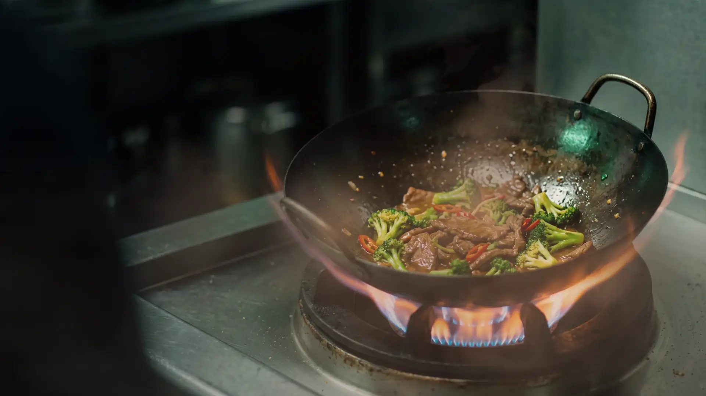

A small kitchen, one very hot wok.
The question
Jade & Ember began as a question about a single flame: what if a dining room felt like standing beside a wok at full heat, without the noise or the smoke?
The answer was not a bigger kitchen. It was a smaller one, with the burner close enough to feel and a counter where you can watch the pan do its work.

The room
The room is charcoal and slate, lit low, with celadon bowls stacked on the pass. Nothing is bright except the flame.
The wok counter seats eight, so the quickest way to understand the menu is to sit where the cooking happens.
The wok
The kitchen cooks Cantonese and Sichuan dishes with a lighter hand. A carbon steel wok is seasoned until it is nearly black, then kept hotter than a home stove can reach.
That heat gives wok hei, the smoky, singed sweetness this place is named for. It is also why the menu stays short: every dish gets its turn at the fire.
The name
Jade for the bowls, ember for the flame. The name is the whole palette.
玉 is the character for jade. 火 is the character for fire.